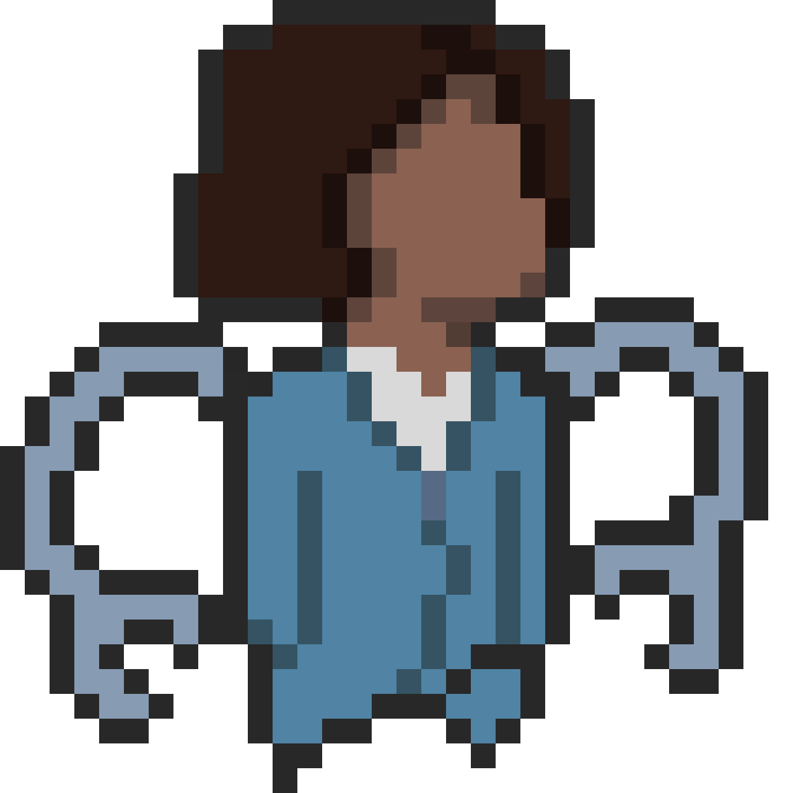
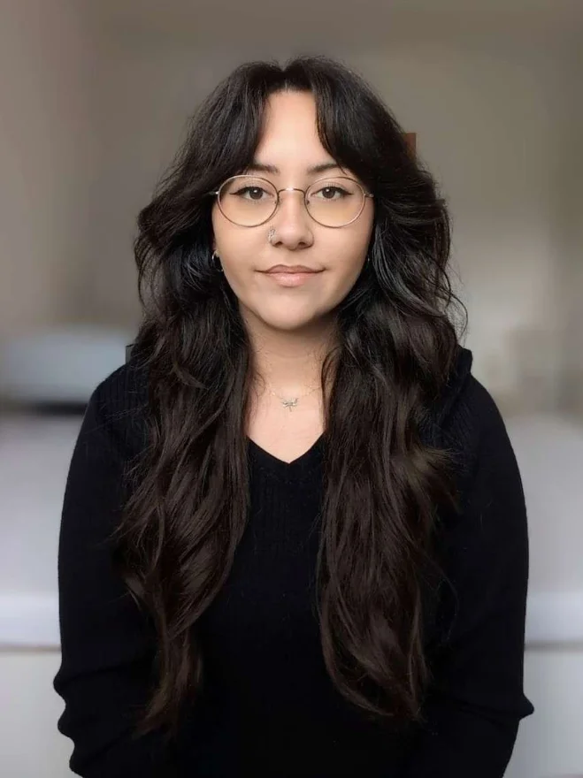

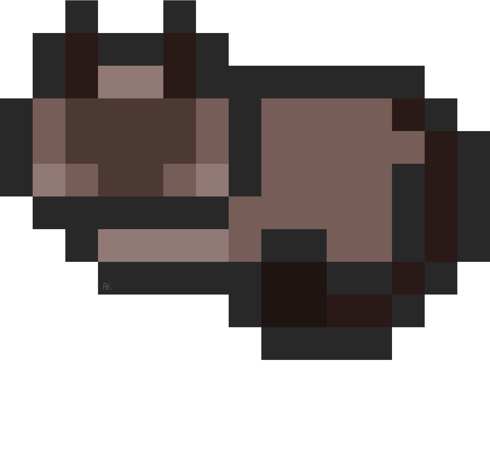

{{ p.num }}
{{ p.title }}
{{ p.tags }}
{{ p.awardKicker }}
- ★ {{ aw.text }}
{{ p.lead }}
{{ p.body }}
{{ p.panelTitle }}
{{ p.panelText }}
{{ p.panelText2 }}
{{ p.panelText3 }}
{{ p.panelText4 }}
{{ t.roles }}


{{ t.aboutP1 }}
{{ t.aboutP2 }}
{{ t.aboutP3 }}

{{ p.num }}
{{ p.tags }}
{{ p.awardKicker }}
{{ p.lead }}
{{ p.body }}
{{ p.panelText }}
{{ p.panelText2 }}
{{ p.panelText3 }}
{{ p.panelText4 }}


{{ g.text }}
{{ g.text2 }}
{{ g.text3 }}
{{ g.text4 }}

{{ t.contactKicker }}
{{ t.contactText }}
{{ t.contactText2 }}
{{ toastKicker }}
{{ toastTitle }}
{{ toastText }}
{{ toastCount }}
{{ b.p }}